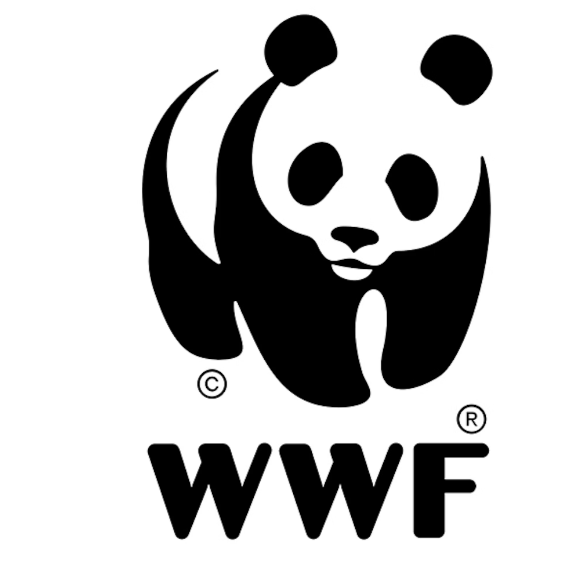
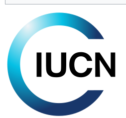
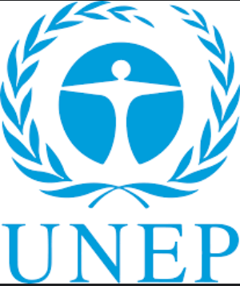
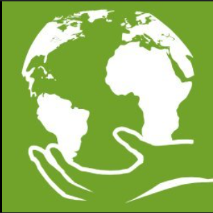
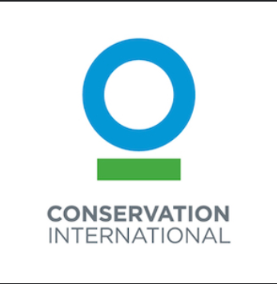

Protected areas, or conservation areas, are critical for preserving biodiversity, ecosystems, and natural resources. These areas provide habitat for wildlife, protect endangered species, and contribute to the overall health of our planet. In today's world, the importance of conserving these spaces has never been greater.
-  World Wildlife Fund - Protected Areas
-  IUCN - Protected Areas
- National Geographic - Protected Areas
-  UNEP - World Conservation Monitoring Centre
-  Protected Planet
-  Conservation International - Protected Areas